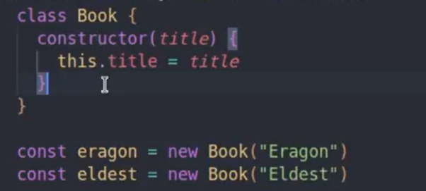

Objetos
Criando Objetos
Para criar um objeto é muito simples , é quase como se fossemos criar uma variável, mas usamos as chaves, então se eu quisesse criar um objeto chamado carro, ficaria assim:
const carro = {}
É comum usarmos const ao invés de let ou var, dentro das chaves poderiamos passar as propriedades que são variáveis que vão armazenar valores, passamos a propriedade depois dois ponto e o valor a ser armazenado, podemos armazenar, número, strings, valores boleanos, array e outro objeto também.
Para referir uma propriedade de um objeto basta chamar o objeto depois colocar um ponto e então o nome da propriedade, se eu tenho um objeto chamado carro e tenho uma propriedade marca, para chamar eu faria da seguinte forma... carro.marca
Para se referir a um objeto dentro dele mesmo usamos a palavra reservada this, então para referir a uma propriedade chamada nome dentro do objeto, podemos usar o seguinte comando this.nome
Métodos
Métodos são funções dentro de um objeto, vou deixar abaixo um exemplo de método.
O addOnStock é um método, que soma o valor passado ao stock já registrado.
Podemos adicionar funções dinamicamente assim:
Função Construtoras
São funções que servem para criar objetos, devem ser escritas em PascalCase, ou seja, com a primeira letra maiúscula e a outra palavra maiúscula também.
Exemplo de Função contrutora..

Para chamar basta acrescentar a palavra new antes de chamar a função normalmente.
Classes e Instância
Uma classe nada mais é do que uma função construtora, ou seja, usada para criar objetos. Para criar uma classe usamos a palavra reservada class damos um nome e dentro da class usamos o método contructor para dizer os atributos que temos que usar nas instâncias. o this no caso das class é usado para refenciar as instacias e não as classes.
Uma instância é como chamados uma class, nesse exemplo o eragon é uma instância da classe Book.
Para criar métodos com as class é bem simples, basta inserir uma função dentro da class e fora do constructor.

Para chamar, é quase como uma função normal, mas passando o instancia e não a class.

Temos o método instanceof que serve para saber se aquele objeto é uma instacia daquela class.

E temos o retorno em valor booleano.

Associação
Para associoar uma class a outra é muito simples, vou deixar um exemplo bem fácil de seguir.
Primeiro, criamos a class Person.

Depois criamos a class Adress.
Exportamos as duas classes para um arquivo index, assim podemos associar uma class na outra.
Outra maneira
Outra maneira de associar seria passar a class Adress diratamente na class Person.
E para chamar a class Person teriamos que chamar já passando os parametros do adress também.
A diferença seria que a classe Person não funcionaria sem a class Adress.